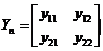

在线测评试卷带图
考试时间90分钟 剩余70分49秒
考生：李源友
一、单选题
1
2
3
4
5
试卷加载完毕，您可以开始答题！
一、单选题
第
1
题，本小题 20 分
A. 41
B. 46
C. 52
D. 57
第
2
题，本小题 20 分
网络
的节点电压方程为，网络的全节点方程为，把的节点①与的节点①、的节点②与的节点②用无阻导线联接，联接后复合网络的节点电压方程为（ ）。
A.
B.
C.
D.
第
3
题，本小题 20 分
某网络的不定导纳阵为，③节点接地后定导纳阵为（ ）。
A.
B. 
C.
D.
第
4
题，本小题 20 分
某多口网络的混合参数方程为，其端口分析法方程为，其中和均为实常数阵，下列陈述正确的是（ ）。
A. 该网络的端接有一半为线性电阻
B. 该网络的端接有一半为非线性电阻
C. 该网络的端接有一半为动态元件
D. 该网络的端接均为线性电阻
第
5
题，本小题 20 分
对"S"型和"N"型非线性电阻,其下倾段 Rd 为负,称为（ ）。
A. 负电阻
B. 负功率
C. 流控源
D. 压控源
 的节点电压方程为，网络的全节点方程为，把的节点①与的节点①、的节点②与的节点②用无阻导线联接，联接后复合网络的节点电压方程为（ ）。
的节点电压方程为，网络的全节点方程为，把的节点①与的节点①、的节点②与的节点②用无阻导线联接，联接后复合网络的节点电压方程为（ ）。